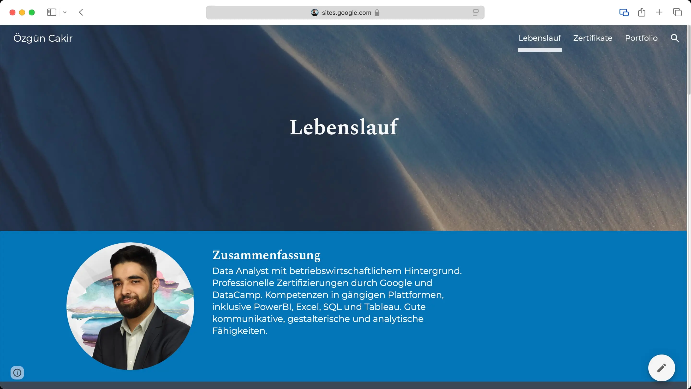
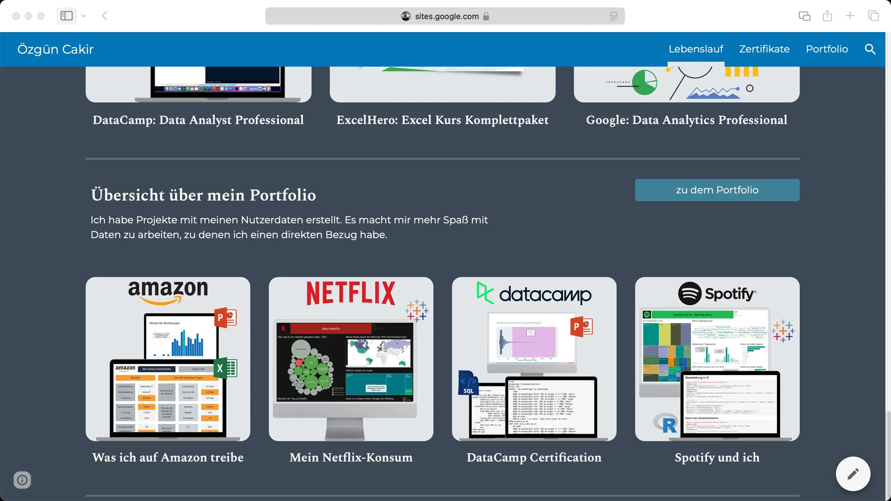
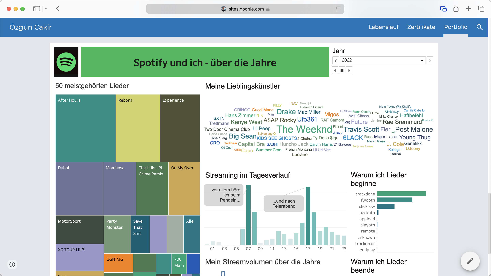
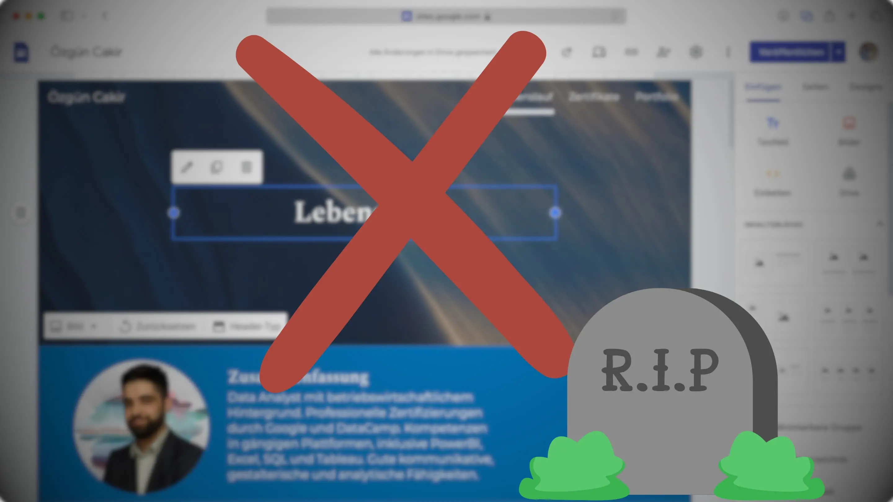
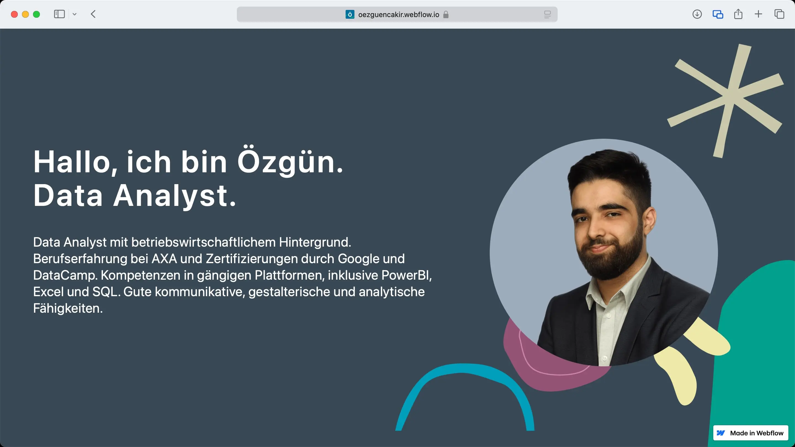
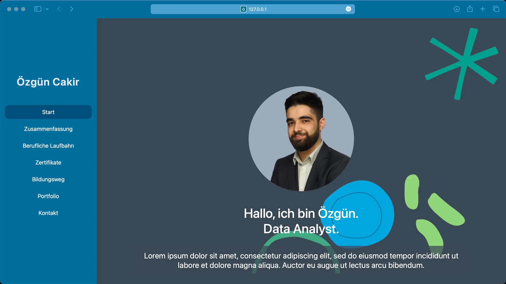
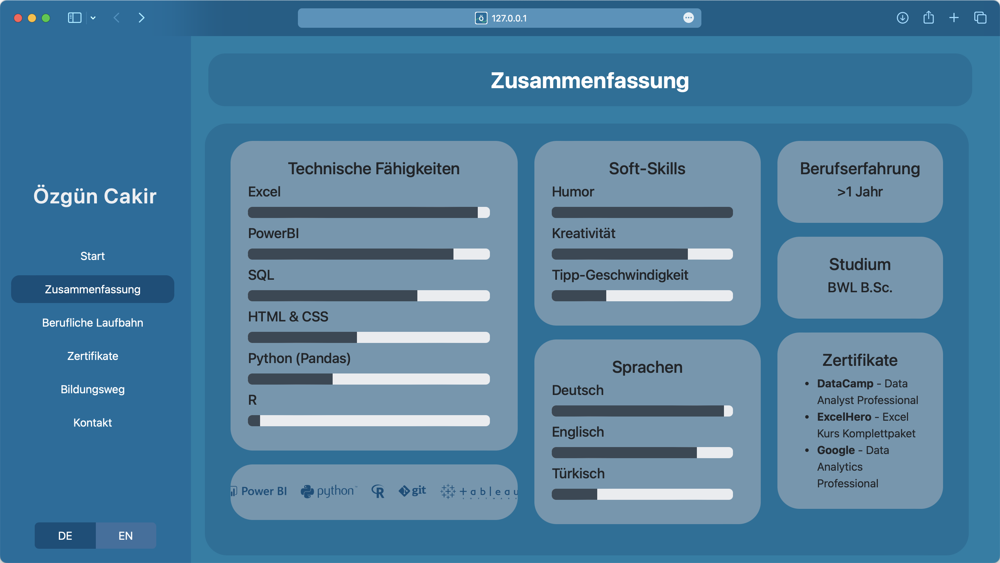
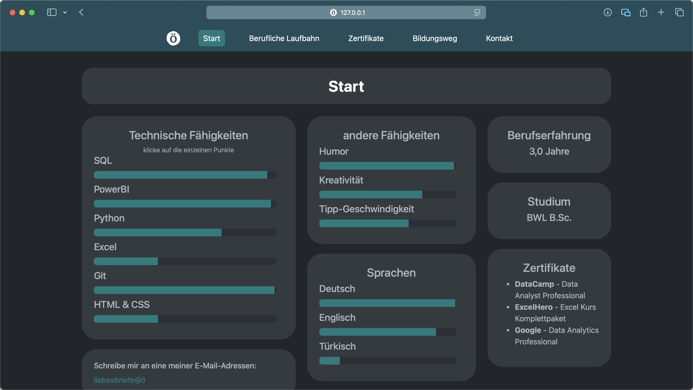
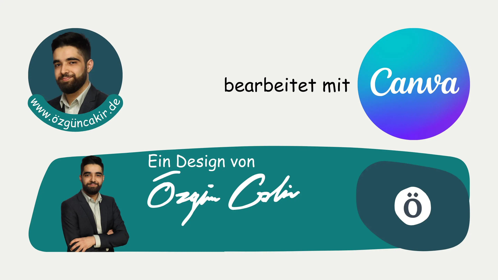

Für die Bewerbungsphase im Mai 2022 habe ich eine eigene Internetseite erstellt.
Der Grund dafür war, dass ich einige Inhalte in meinem Lebenslauf unterbringen wollte, für die dort kein Platz mehr war. Dazu gehörten Links zu einzelnen Projekten aus meinem Portfolio sowie Texte zu Kursen, die ich außerhalb meines Studiums absolviert habe. Zusätzlich fand ich die Idee einer eigenen Internetseite spannend und wollte einen weiteren Punkt haben, mit dem ich aus der Masse herausstechen konnte.
Über Google Sites hatte ich mir die Seite zusammengeklickt. So konnte ich eine Seite schnell und ohne viel technischen Aufwand basteln.
Die Domain hatte ich über Google Domains gekauft und mit der Seite verknüpft. Die einzigen Kosten, die die Webseite verursachte, waren 7 € pro Jahr für die Domain.
Mein Portfolio basierte im Wesentlichen auf meinen eigenen Daten. Dabei hatte ich von den jeweiligen Diensten meine Daten angefordert und diese ausgewertet.
Meine Amazon-Daten hatte ich mit Excel und PowerPoint ausgewertet. Tableau hatte ich benutzt, um meine Netflix- und Spotify-Daten zu visualisieren. Die SQL-Queries und die PowerPoint-Präsentation von meiner DataCamp-Zertifizierung hatte ich auch hochgeladen.
Aktuell sehe ich aber keinen Bedarf mehr für ein Portfolio.



Nach einer erfolgreichen Bewerbungsphase konnte meine Seite ihren Zweck erfüllen.
Jedoch hatte mich der Ehrgeiz gepackt, eine eigene Seite zu bauen, statt sie nur zusammenzuklicken. Die Seite sollte auch für Mobilgeräte optimiert werden können und beim Design wollte ich mehr Möglichkeiten haben. Ich habe auch Spaß an Projekten dieser Art. Ich mag es nämlich, mich hinzusetzen und mit technischen Problemen herumzuschlagen, während ich etwas baue. So habe ich diese neue Seite bereits Mitte 2022 begonnen und in vielen kleinen Schritten langsam bearbeitet.
Zuerst habe ich mit Webflow versucht, die neue Seite zu erstellen. Webflow bietet zwar wesentlich mehr Funktionen als Google Sites, das ging mir aber hinsichtlich der Anpassungsmöglichkeiten nicht weit genug. Zudem wollte ich nicht schon wieder mit einem Baukasten arbeiten müssen und davon abhängig sein. Das Ganze führte dazu, dass ich mich eines Tages bereit fühlte, eine Seite selbst auf die Beine zu stellen und den Code dafür zu schreiben.
Zu Beginn war die Seite wesentlich bunter, seitdem habe ich aber die Farbvielfalt reduziert. Das lag zum einen daran, dass die Seite etwas professioneller aussehen sollte, aber auch um einen Dark-Mode besser einführen zu können.
Die Seite hatte eine Seitenleiste, statt einer Navigationsleiste oben. Die Seitenleiste habe ich nach oben verschoben, um ein einheitlicheres Design unabhängig von der Bildschirmgröße zu ermöglichen. Dadurch stand auch der Inhalt mehr im Zentrum.
Ich hatte die erste Version der Seite schon im September 2022 deployed. Dies lief über GitHub Pages. Dadurch konnte ich die Seite einfach und kostenlos über GitHub hosten.
Das zugehörige Repository habe ich aber mittlerweile archiviert. Es ist voller kleiner Commits, die teilweise ein wenig fragwürdig erscheinen. Außerdem kann es sein, dass ich auf Prod getestet habe. Da versteht es sich, dass ich meine Spuren verwischen möchte und mit einem neuen Repository angefangen habe.
Die Seite habe ich zwischenzeitlich runtergenommen. Das lag daran, dass sie die ganze Zeit unvollständig war und ich mich so zwingen wollte, sie endlich abzuschließen.




Für die Bildbearbeitung habe ich Canva genutzt. Canva funktioniert einfach und macht so ziemlich alles was ich brauche.

